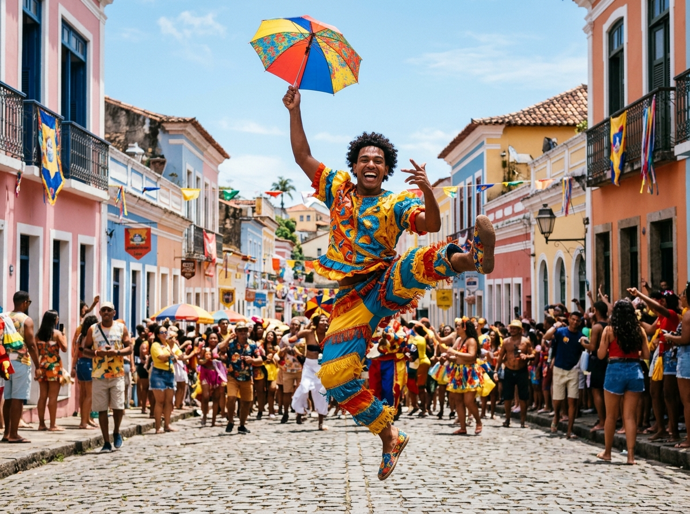
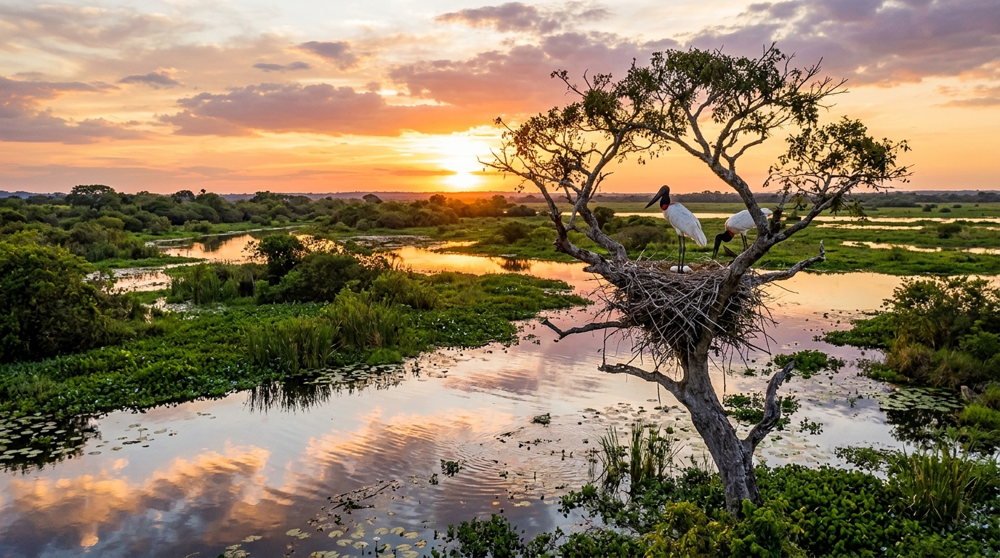

7 Estados
Região Norte
O pulsar da Floresta Amazônica, o misticismo do Festival de Parintins, a grandiosidade do Círio de Nazaré e os sabores do tacacá e açaí puro.
Conhecer o NorteDigite seu nome para personalizar sua navegação e salvar suas notas no navegador (LocalStorage).
Selecione uma região para conhecer suas principais manifestações culturais, culinária e belezas naturais:
O pulsar da Floresta Amazônica, o misticismo do Festival de Parintins, a grandiosidade do Círio de Nazaré e os sabores do tacacá e açaí puro.
Conhecer o Norte
O calor do frevo pernambucano, os tambores do maracatu, as cores do São João de Caruaru e Campina Grande, e a riqueza do cordel.
Conhecer o Nordeste
O santuário ecológico do Pantanal, os acordes da Viola de Cocho, as históricas Cavalhadas de Pirenópolis e o delicioso arroz com pequi.
Conhecer o Centro-Oeste
O espetáculo global do Samba carioca, os sinos barrocos das cidades históricas de Minas Gerais, a efervescência urbana e a gastronomia caipira e caiçara.
Conhecer o Sudeste
A força da cultura gaúcha, o chimarrão à beira do fogo, as festas típicas de imigração alemã e italiana, a serra e o tradicional barreado litorâneo.
Conhecer o SulEste portal atende a todos os critérios acadêmicos do edital de Front-End, incluindo persistência no LocalStorage, galeria com CSS Grid Layout, players nativos de áudio e vídeo, e duas páginas em HTML5/CSS3 puro sem frameworks.